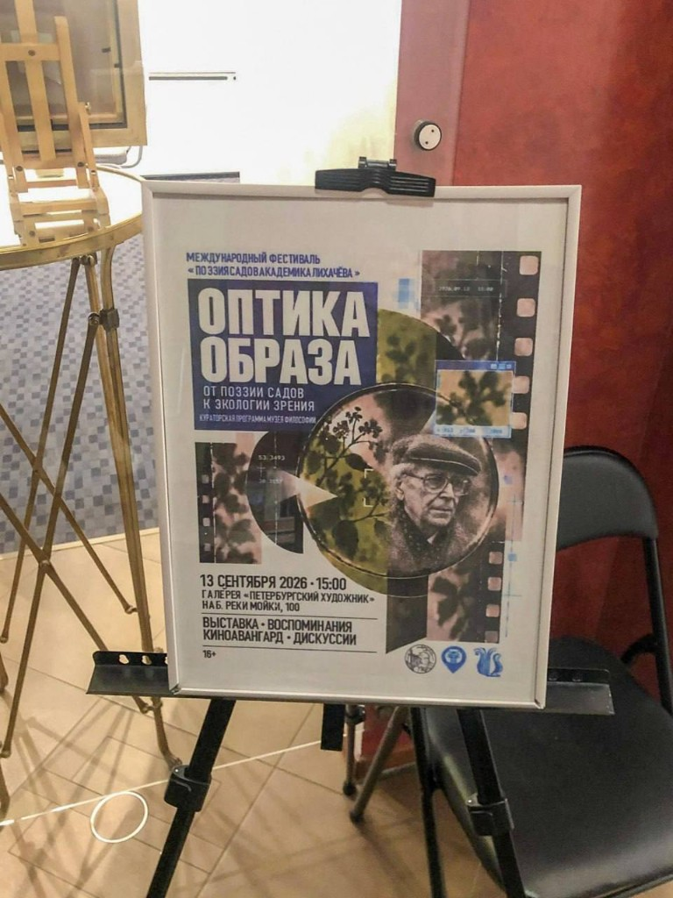
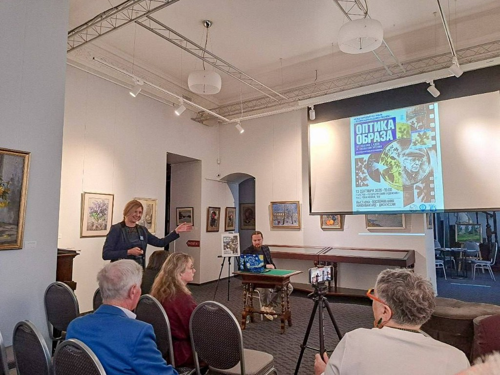
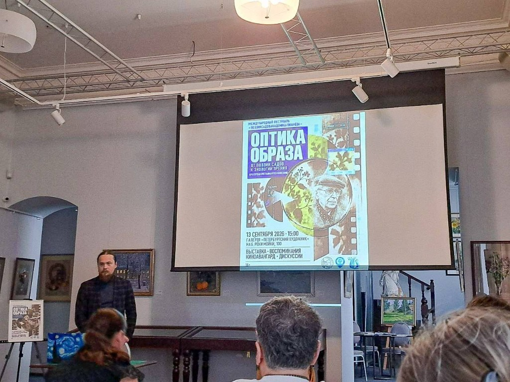
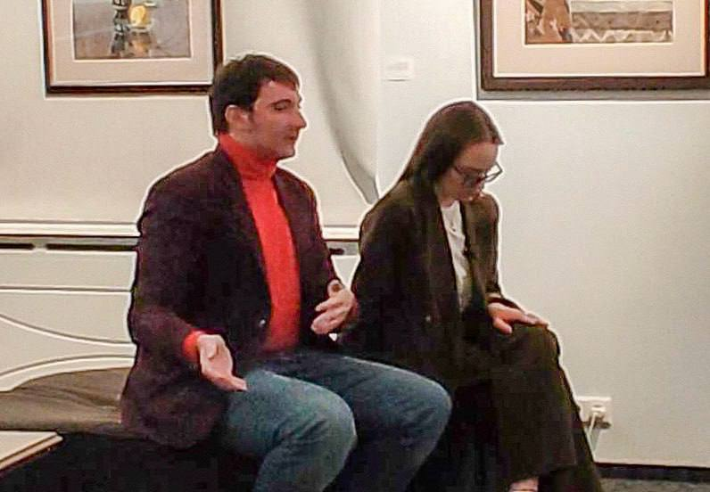
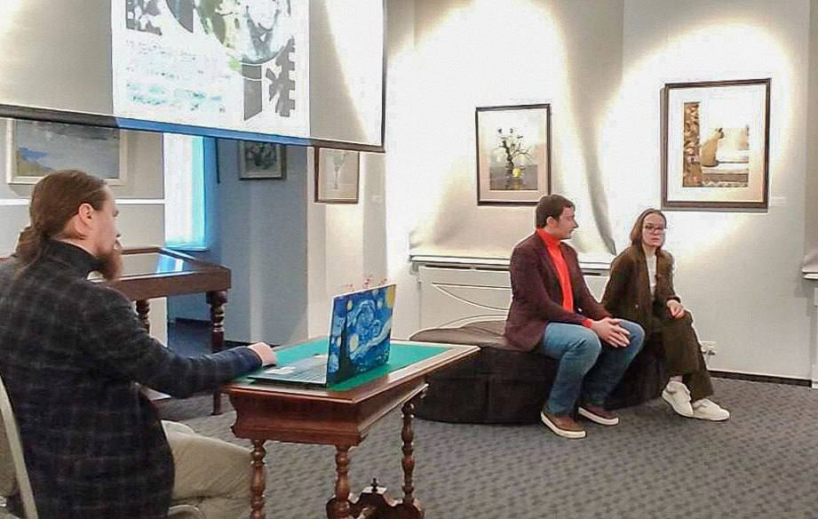
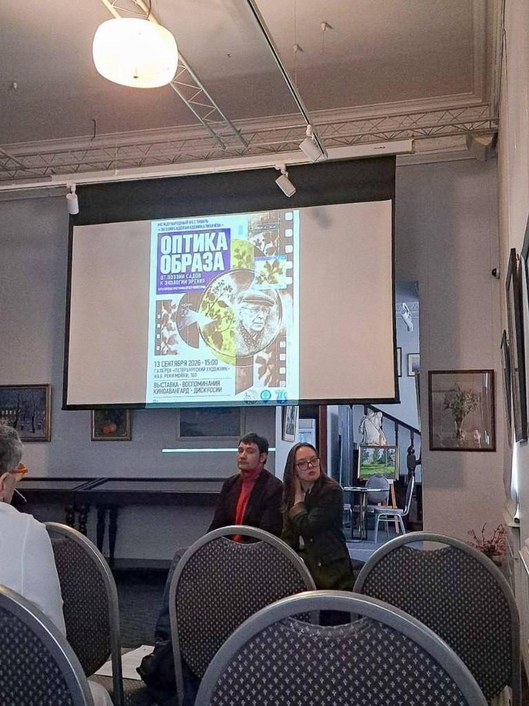
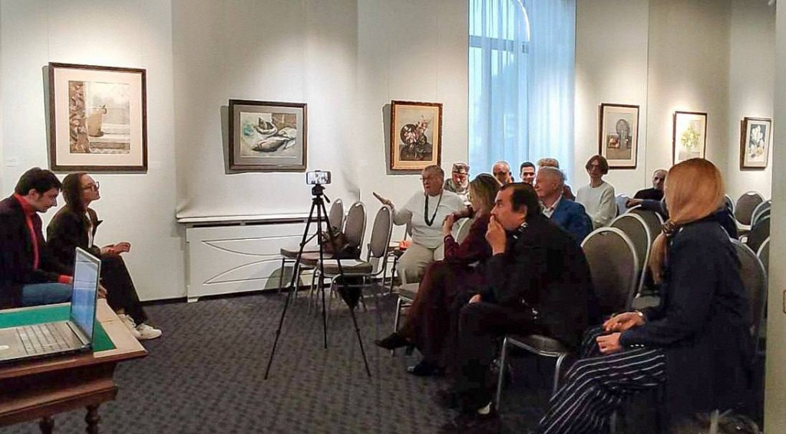

13 сентября в галерее «Петербургский художник» прошла кураторская программа Музея философии «Оптика образа», ставшая продолжением фестиваля «Поэзия садов академика Лихачёва».
Центральным событием встречи стал показ фильма «Менильмонтан» Димитрия Кирсанова. В этом году картине исполнилось сто лет.



Название программы задало основной вопрос разговора. На первый взгляд, оптика имеет отношение к зрению, к расстоянию между глазом и предметом, к устройству взгляда. Но в данном случае речь шла ещё и о выборе позиции. С какой дистанции мы смотрим на фильм, снятый сто лет назад? Как на исторический экспонат или как на живое произведение, способное обратиться к нам сегодня?
Перед показом кураторы Музея философии Никита Добров и Дарья Олефиренко изложили свои позиции о том, зачем сегодня смотреть немое кино и как его читать без реплик, пояснений и субтитров.



Кирсанов не предлагает готового комментария. Сюжет и смысл фильма приходится самостоятельно собирать из лиц, жестов, ритма, повторений и разрывов между кадрами.
После просмотра разговор продолжился в формате открытого обсуждения. Говорили о визуальном языке фильма, памяти и о том, почему спустя сто лет «Менильмонтан» всё ещё не воспринимается как нечто окончательно оставшееся в прошлом.

Получился камерный кинопоказ и живой разговор между кураторами и зрителями.
Благодарим галерею «Петербургский художник» и всех, кто пришёл, предложил свою оптику и высказал свою позицию!